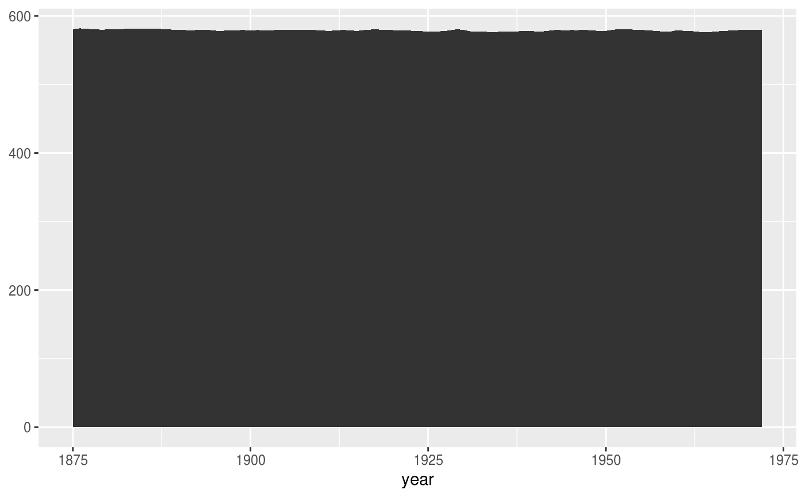
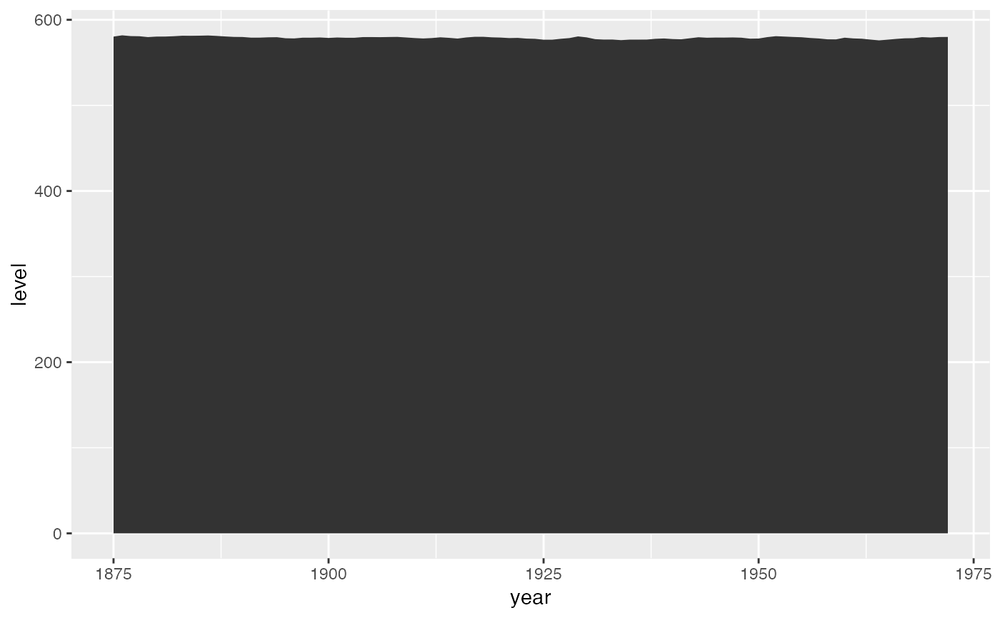
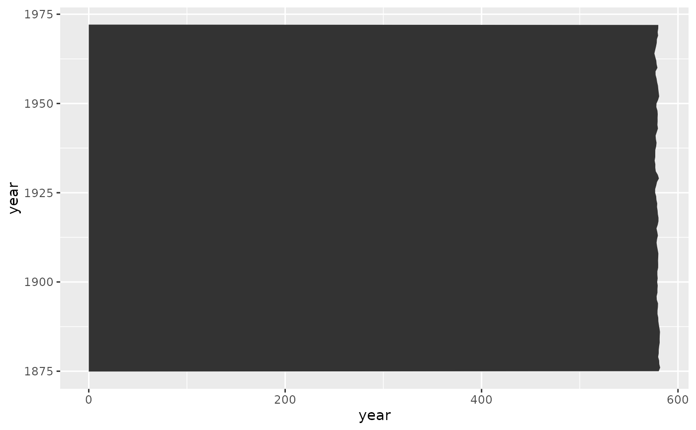
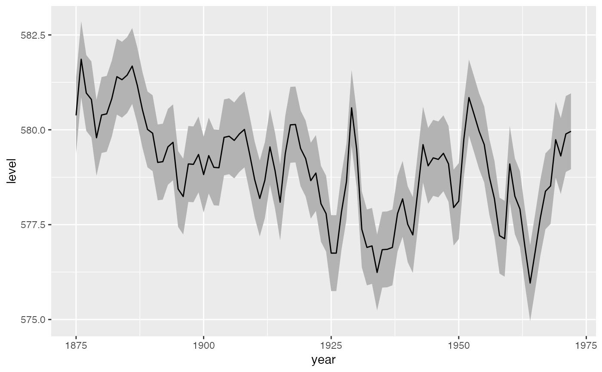
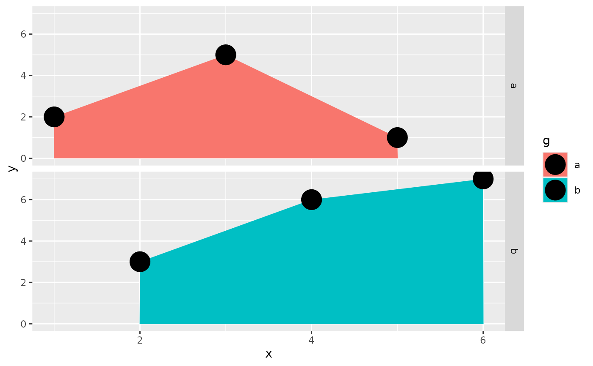
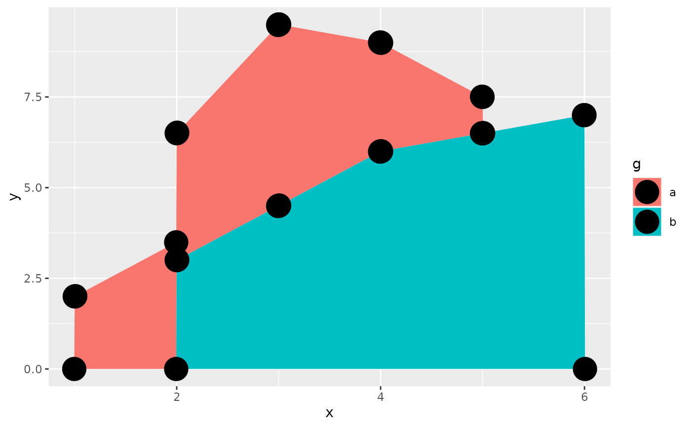
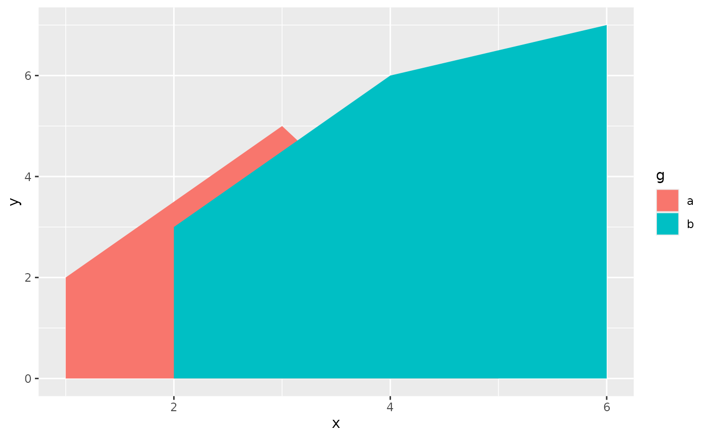

For each x value, geom_ribbon() displays a y interval defined
by ymin and ymax. geom_area() is a special case of
geom_ribbon(), where the ymin is fixed to 0 and y is used instead
of ymax.
Usage
geom_ribbon(
mapping = NULL,
data = NULL,
stat = "identity",
position = "identity",
...,
na.rm = FALSE,
orientation = NA,
show.legend = NA,
inherit.aes = TRUE,
outline.type = "both"
)
geom_area(
mapping = NULL,
data = NULL,
stat = "align",
position = "stack",
na.rm = FALSE,
orientation = NA,
show.legend = NA,
inherit.aes = TRUE,
...,
outline.type = "upper"
)
stat_align(
mapping = NULL,
data = NULL,
geom = "area",
position = "identity",
...,
na.rm = FALSE,
show.legend = NA,
inherit.aes = TRUE
)Arguments
- mapping
Set of aesthetic mappings created by
aes(). If specified andinherit.aes = TRUE(the default), it is combined with the default mapping at the top level of the plot. You must supplymappingif there is no plot mapping.- data
The data to be displayed in this layer. There are three options:
If
NULL, the default, the data is inherited from the plot data as specified in the call toggplot().A
data.frame, or other object, will override the plot data. All objects will be fortified to produce a data frame. Seefortify()for which variables will be created.A
functionwill be called with a single argument, the plot data. The return value must be adata.frame, and will be used as the layer data. Afunctioncan be created from aformula(e.g.~ head(.x, 10)).- stat
The statistical transformation to use on the data for this layer. When using a
geom_*()function to construct a layer, thestatargument can be used to override the default coupling between geoms and stats. Thestatargument accepts the following:A
Statggproto subclass, for exampleStatCount.A string naming the stat. To give the stat as a string, strip the function name of the
stat_prefix. For example, to usestat_count(), give the stat as"count".For more information and other ways to specify the stat, see the layer stat documentation.
- position
A position adjustment to use on the data for this layer. This can be used in various ways, including to prevent overplotting and improving the display. The
positionargument accepts the following:The result of calling a position function, such as
position_jitter(). This method allows for passing extra arguments to the position.A string naming the position adjustment. To give the position as a string, strip the function name of the
position_prefix. For example, to useposition_jitter(), give the position as"jitter".For more information and other ways to specify the position, see the layer position documentation.
- ...
Other arguments passed on to
layer()'sparamsargument. These arguments broadly fall into one of 4 categories below. Notably, further arguments to thepositionargument, or aesthetics that are required can not be passed through.... Unknown arguments that are not part of the 4 categories below are ignored.Static aesthetics that are not mapped to a scale, but are at a fixed value and apply to the layer as a whole. For example,
colour = "red"orlinewidth = 3. The geom's documentation has an Aesthetics section that lists the available options. The 'required' aesthetics cannot be passed on to theparams. Please note that while passing unmapped aesthetics as vectors is technically possible, the order and required length is not guaranteed to be parallel to the input data.When constructing a layer using a
stat_*()function, the...argument can be used to pass on parameters to thegeompart of the layer. An example of this isstat_density(geom = "area", outline.type = "both"). The geom's documentation lists which parameters it can accept.Inversely, when constructing a layer using a
geom_*()function, the...argument can be used to pass on parameters to thestatpart of the layer. An example of this isgeom_area(stat = "density", adjust = 0.5). The stat's documentation lists which parameters it can accept.The
key_glyphargument oflayer()may also be passed on through.... This can be one of the functions described as key glyphs, to change the display of the layer in the legend.
- na.rm
If
FALSE, the default, missing values are removed with a warning. IfTRUE, missing values are silently removed.- orientation
The orientation of the layer. The default (
NA) automatically determines the orientation from the aesthetic mapping. In the rare event that this fails it can be given explicitly by settingorientationto either"x"or"y". See the Orientation section for more detail.- show.legend
logical. Should this layer be included in the legends?
NA, the default, includes if any aesthetics are mapped.FALSEnever includes, andTRUEalways includes. It can also be a named logical vector to finely select the aesthetics to display. To include legend keys for all levels, even when no data exists, useTRUE. IfNA, all levels are shown in legend, but unobserved levels are omitted.- inherit.aes
If
FALSE, overrides the default aesthetics, rather than combining with them. This is most useful for helper functions that define both data and aesthetics and shouldn't inherit behaviour from the default plot specification, e.g.borders().- outline.type
Type of the outline of the area;
"both"draws both the upper and lower lines,"upper"/"lower"draws the respective lines only."full"draws a closed polygon around the area.- geom
The geometric object to use to display the data for this layer. When using a
stat_*()function to construct a layer, thegeomargument can be used to override the default coupling between stats and geoms. Thegeomargument accepts the following:A
Geomggproto subclass, for exampleGeomPoint.A string naming the geom. To give the geom as a string, strip the function name of the
geom_prefix. For example, to usegeom_point(), give the geom as"point".For more information and other ways to specify the geom, see the layer geom documentation.
Details
An area plot is the continuous analogue of a stacked bar chart (see
geom_bar()), and can be used to show how composition of the
whole varies over the range of x. Choosing the order in which different
components is stacked is very important, as it becomes increasing hard to
see the individual pattern as you move up the stack. See
position_stack() for the details of stacking algorithm. To facilitate
stacking, the default stat = "align" interpolates groups to a common set
of x-coordinates. To turn off this interpolation, stat = "identity" can
be used instead.
Orientation
This geom treats each axis differently and, thus, can thus have two orientations. Often the orientation is easy to deduce from a combination of the given mappings and the types of positional scales in use. Thus, ggplot2 will by default try to guess which orientation the layer should have. Under rare circumstances, the orientation is ambiguous and guessing may fail. In that case the orientation can be specified directly using the orientation parameter, which can be either "x" or "y". The value gives the axis that the geom should run along, "x" being the default orientation you would expect for the geom.
Aesthetics
geom_ribbon() understands the following aesthetics (required aesthetics are in bold):
Learn more about setting these aesthetics in vignette("ggplot2-specs").
See also
geom_bar() for discrete intervals (bars),
geom_linerange() for discrete intervals (lines),
geom_polygon() for general polygons
Examples
# Generate data
huron <- data.frame(year = 1875:1972, level = as.vector(LakeHuron))
h <- ggplot(huron, aes(year))
h + geom_ribbon(aes(ymin=0, ymax=level))

h + geom_area(aes(y = level))

# Orientation cannot be deduced by mapping, so must be given explicitly for
# flipped orientation
h + geom_area(aes(x = level, y = year), orientation = "y")

# Add aesthetic mappings
h +
geom_ribbon(aes(ymin = level - 1, ymax = level + 1), fill = "grey70") +
geom_line(aes(y = level))

# The underlying stat_align() takes care of unaligned data points
df <- data.frame(
g = c("a", "a", "a", "b", "b", "b"),
x = c(1, 3, 5, 2, 4, 6),
y = c(2, 5, 1, 3, 6, 7)
)
a <- ggplot(df, aes(x, y, fill = g)) +
geom_area()
# Two groups have points on different X values.
a + geom_point(size = 8) + facet_grid(g ~ .)

# stat_align() interpolates and aligns the value so that the areas can stack
# properly.
a + geom_point(stat = "align", position = "stack", size = 8)

# To turn off the alignment, the stat can be set to "identity"
ggplot(df, aes(x, y, fill = g)) +
geom_area(stat = "identity")
